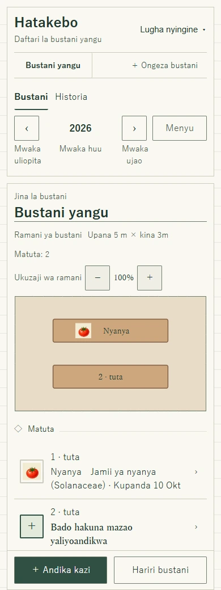
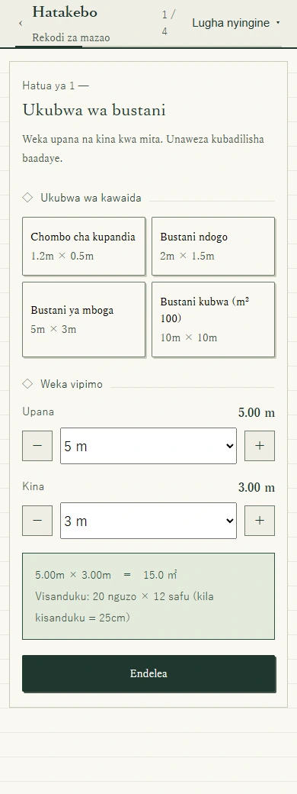
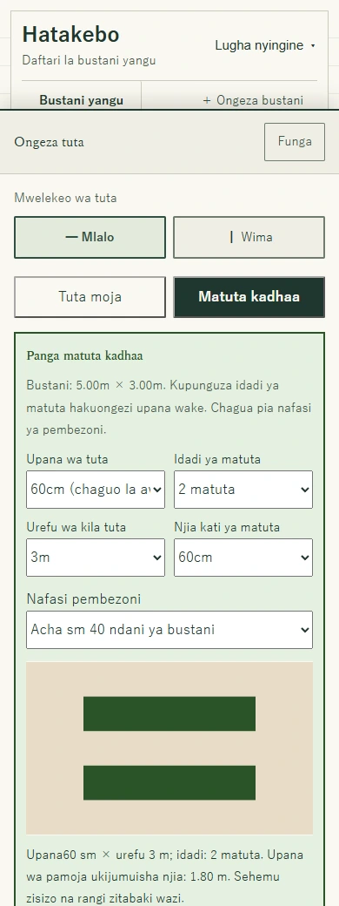
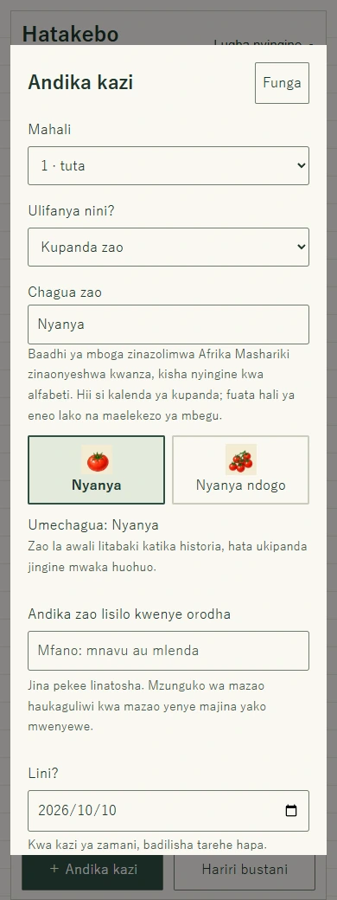
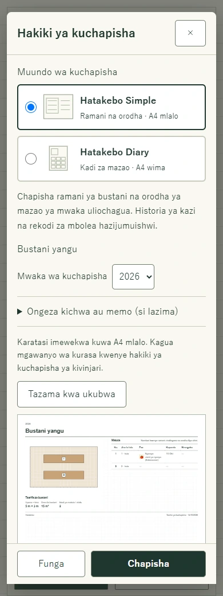
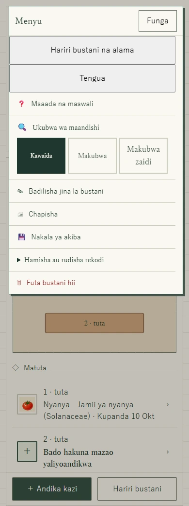

Bustani yako ya kwanza · Mwongozo wenye picha
Jinsi ya kupanga bustani ya mboga na matuta
Anza na ramani. Ongeza matuta. Kumbuka ulichopanda.
Huhitaji kujaza kila kitu mara moja. Tutaanza na daftari tupu na kutengeneza matuta mawili, moja likiwa na nyanya. Vitufe ni vilevile kwenye simu na kompyuta; huhitaji kuburuta.
Huu ndio mfano tutakaotengeneza
Bustani yangu yenye m 5 × 3 na matuta mawili ya mlalo. Tuta la kwanza litaandikwa nyanya na jingine litabaki wazi. Vipimo, zao na tarehe ni mfano wa kutumia programu, si ushauri wa kilimo au nafasi ya kupanda.
Fungua Hatakebo kwenye kichupo kipyaAcha mwongozo wazi unapojaribu hatua hizi.

Kabla ya kuanza
Pima upana na kina cha eneo unaloweza kutumia. Usijumuishe njia za pamoja kwenye bustani yako. Acha nafasi ya kutembea na kufikia mimea kwa urahisi. Katika bustani ya pamoja, zingatia mipaka na masharti ya eneo.
Hatua 1
Weka ukubwa na jina la bustani
- Fungua Hatakebo na uchague Tengeneza bustani.
- Weka Upana kuwa 5 m na Kina kuwa 3 m, kisha Endelea. Kwa bustani yako tumia vipimo halisi.
- Katika mfano huu, acha umbo la mstatili. Ikiwa bustani yako si ya mstatili, gusa visanduku visivyotumika kuviondoa. Chagua Endelea.
- Ongeza alama za karibu ukitaka, au endelea bila hizo.
- Andika Bustani yangu, chagua Tengeneza bustani hii, kisha Fungua bustani yangu. Unaweza kufuata maelekezo mafupi au kuchagua Ruka.

Hatua 2
Acha nafasi ya matuta na njia
- Kwenye bustani tupu, chagua ＋ Ongeza tuta.
- Chagua Mlalo, kisha Matuta kadhaa.
- Weka vipimo vifuatavyo na uangalie hakiki.
- Sogeza chini na uchague Tengeneza matuta: 2 kwa mpangilio huu. Ikiwa bado unahariri, chagua Maliza kuhariri.
- Upana wa tuta
- 60 cm (sm 60)
- Idadi ya matuta
- 2
- Urefu wa kila tuta
- 3 m
- Njia kati ya matuta
- 60 cm (sm 60)
- Nafasi pembezoni
- 40 cm (sm 40) ndani ya bustani
Matuta mawili ya sm 60 na njia ya sm 60 yanahitaji m 1.8. Ukiongeza sm 40 kila upande, jumla ni m 2.6, zinazotoshea katika kina cha m 3. Kwa upande mwingine, urefu wa m 3 na nafasi mbili za sm 40 ni m 3.8, chini ya upana wa m 5.

Hatua 3
Andika zao ulilopanda
- Chagua ＋ Andika kazi. Katika Mahali, chagua tuta la kwanza, lenye jina 1 · tuta katika mfano.
- Katika Ulifanya nini?, chagua Kupanda zao.
- Tafuta Nyanya na uchague picha yake. Unaweza pia kuanza kwa kuchagua tuta kwenye ramani au orodha.
- Angalia Lini?. Tarehe ya mwanzo ni ya leo; ibadilishe ikiwa ulipanda zamani.
- Sogeza chini na uchague Hifadhi rekodi. Nyanya itaonekana kwenye ramani. Tuta la pili linaweza kubaki wazi.
Mpangilio wa mazao hurahisisha kutafuta, haupendekezi wakati wa kupanda. Kwa mboji, mbolea ya kijani au madokezo, rudi kwenye Andika kazi na uchague kazi husika. Kuandika zao linalofuata kwenye tuta lilelile hakuondoi la awali katika historia.

Hatua 4
Beba nakala ya ramani bustanini
Chagua Hatakebo Simple kwa ramani na orodha ya mazao kwenye A4 mlalo, au Hatakebo Diary kwa kadi za mazao na kumbukumbu za mwaka kwa kila tuta kwenye A4 wima. Zote zina mistari ya miraba hafifu. Chagua rangi au nyeusi na nyeupe katika mipangilio ya uchapishaji. Kichwa na memo ni hiari.
Simple ina ramani, orodha ya mazao na viashiria vya mzunguko wa mazao vya mwaka uliochaguliwa, bila historia ya shughuli. Diary ina kumbukumbu za kupanda na shughuli za mwaka huo; kumbukumbu za pamoja kama mbolea na maelezo huonekana kwa kila tuta. Diary haina tathmini ya mzunguko wa mazao. Kumbukumbu ndefu huendelea kwenye kurasa zaidi.
- Chagua Menyu → Chapisha.
- Angalia jina, mwaka, ramani na orodha ya matuta.
- Chagua Chapisha chini. Kwenye dirisha la kivinjari au kifaa, chagua kichapishi au hifadhi kama PDF ikiwa chaguo hilo linapatikana.
Ramani inatoshea kwenye karatasi; haichapishwi kwa ukubwa halisi wa bustani. Vipimo na eneo vinaonyeshwa kando au chini yake.

Hatua 5
Hifadhi nakala na jiandae bila intaneti
- Chagua Menyu → Nakala ya akiba na uhakikishe faili imepakuliwa. Hifadhi nakala kwenye kifaa au hifadhi nyingine.
- Kwenye kifaa lengwa, tumia Hamisha au rudisha rekodi → Ingiza nakala ya akiba. Kuingiza kunabadilisha data iliyopo; ihifadhi kwanza ikiwa ni muhimu.
- Kabla ya kuondoka, fungua programu ya Kiswahili ukiwa na intaneti na usubiri Tayari kutumika bila intaneti. Baadaye utaweza kufungua tena na kuandika katika kifaa na kivinjari kilekile bila mtandao.
Rekodi hubaki kwenye kivinjari, bila nakala kwenye seva ya Hatakebo au usawazishaji wa vifaa. Usifute data ya tovuti. Chapisho au PDF ni ya kusoma, si nakala inayoweza kuingizwa kwenye programu.
